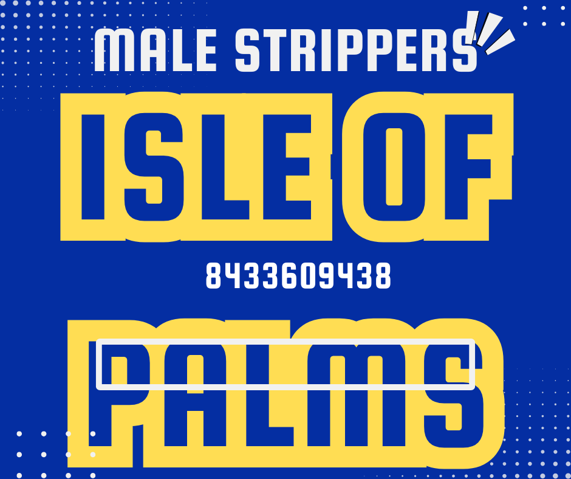

A Popular Idea for Isle of Palms Bachelorette Weekends
Bachelorette brunch entertainment has become a popular option for groups planning a full weekend near the beach. Instead of saving all the excitement for nighttime, many bridal parties now include a surprise daytime performer during brunch, mimosas, and pre-going-out photos.
- Great for brunch parties, mimosas, and beach house gatherings
- Perfect for bachelorette weekends, girls trips, and birthday groups
- Easy private party booking with discreet communication

The Perfect Fit for a Daytime Celebration
Beach House Brunches
A fun daytime performance works perfectly for rental houses, brunch setups, and private group celebrations.
Memorable Photo Moments
Surprise entertainment always creates hilarious reactions and unforgettable bachelorette weekend content.
Interactive Party Energy
More than just a quick appearance, the experience adds real energy and excitement to the whole brunch party.
Perfect for Weekend Trips
Great for bachelorettes, girls weekends, birthdays, and other celebration groups staying near Charleston beaches.

A Better Daytime Surprise for the Bride
For many bridal groups, a brunch party show feels more fun and easier to pull off than waiting until late at night. It works well before beach time, before dinner reservations, or before heading into Charleston for nightlife. That makes it one of the easiest ways to build a full celebration itinerary around the bride.
Whether the group wants something playful, wild, or simply unforgettable, brunch entertainment gives the party an instant highlight everyone will be talking about long after the weekend is over.
Booking Your Brunch Party Entertainment Is Easy
Inquire
Text or call with your date, brunch location, and the type of party you are planning near Isle of Palms.
Customize
Plan the timing, party vibe, and surprise moment so the daytime show fits your group perfectly.
Celebrate
Enjoy a fun private performance that helps turn your brunch into one of the biggest highlights of the weekend.
Serving Bachelorette Groups Staying Near Isle of Palms
This type of party entertainment is popular with groups staying in beach rentals, vacation homes, and weekend houses near Isle of Palms, Sullivan’s Island, Mount Pleasant, and greater Charleston. Many bachelorette parties want a daytime surprise that fits naturally into a full weekend itinerary, and brunch bookings are one of the easiest ways to make that happen.
Ready to Plan an Epic Bachelorette Brunch?
Weekend dates fill fast, especially during bachelorette season. Reach out now to book your daytime party entertainment and lock in the surprise before your event date is gone.
Check Availability & Book